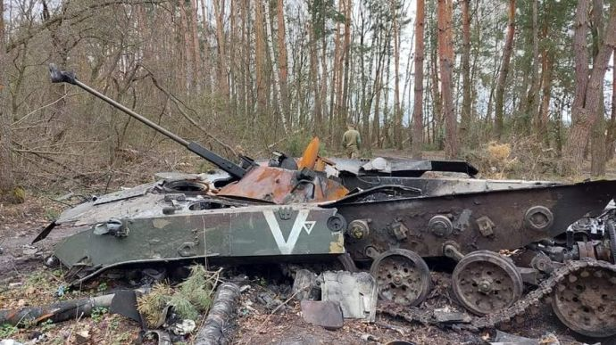

Втрати Росії у масштабній війні проти України наближаються до 45 тисяч – Генштаб
(інформація станом на ранок 20 серпня 2022 року)
русня у повномасштабній війні проти України станом на ранок 20 серпня втратила близько 44 900 своїх військових, повідомив Генеральний штаб Збройних сил України.
За даними Генштабу, за останню добу російські сили втратили близько 200 військових, найбільше – на Донецькому напрямку.
Крім того, за даними командування, русня у повномасштабній війні проти України втратила:
- 1907 танків (вісім за останню добу)
- 4212 бойових броньованих машин (+17)
- 1018 артилерійських систем (+2)
- 266 РСЗВ
- 1234 свинособачих блохоліта. З них:
- 234 літаки
- 197 гелікоптерів
- 803 БПЛА оперативно-тактичного рівня (+8)
- 141 засіб ППО
- 190 крилатих ракет
- 15 кораблів /катерів
- 3137 одиниць автомобільної техніки й автоцистерн (+7)
- 97 одиниць спеціальної техніки (+3).
За даними Пентагону на 9 серпня, від початку повномасштабної війни в Україні загинули чи зазнали поранення
70-80 тисяч російських військовослужбовців. 9 червня видання The Guardian із посиланням на
джерело у високопоставлених колах повідомило, що російська армія з початку масштабного вторгнення в Україну
могла втратити близько 20 тисяч військових. Москва про свої втрати у війні проти України останнім часом не
повідомляє. 25 березня лише вдруге від початку масштабного вторгнення російська сторона оприлюднила дані про
втрати російських військ, згідно з якими 1 351 російський військовослужбовець загинув, ще 3 825 – зазнали
поранень. Перевірити дані про втрати в умовах бойових дій неможливо.
За даними Пентагону на 9 серпня, від початку повномасштабної війни в Україні загинули чи зазнали поранення
70-80 тисяч російських військовослужбовців. 9 червня видання The Guardian із посиланням на
джерело у високопоставлених колах повідомило, що російська армія з початку масштабного вторгнення в Україну
могла втратити близько 20 тисяч військових. Москва про свої втрати у війні проти України останнім часом не
повідомляє. 25 березня лише вдруге від початку масштабного вторгнення російська сторона оприлюднила дані про
втрати російських військ, згідно з якими 1 351 російський військовослужбовець загинув, ще 3 825 – зазнали
поранень. Перевірити дані про втрати в умовах бойових дій неможливо.